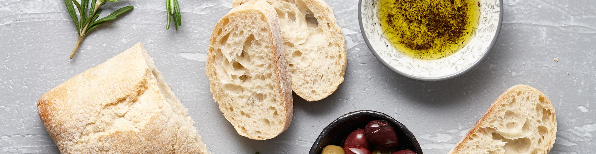

PIATTI TIPICI DELLA CUCINA TOSCANA
ANTIPASTI
Pecorini di Pienza e Salumi
Crostini, fegatini
Coccoli, Prosciutto e Stracchino
PRIMI PIATTI
Ribollita
Pappa al pomodoro
Pappardelle al cinghiale
SECONDI PIATTI
Bistecca alla Fiorentina
Cacciucco
Peposo dell'Impruneta
DOLCI
Panforte
Torta al semolino
Schiacciata alla fiorentina
ti e' venuta fame?
Leggi le recensioni dei ristoranti e prenota un tavolo!! Clicca sul logo